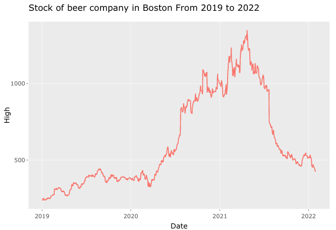

People have been celebrating with beer for millennia.
The demand for beer never decreased. The stock price may be influenced by COVID or other reasons in the recent year but prediction shows it will be back as time goes by.

Beer is one of the most common and popular alcohols in our life.
According to TIMES report, More than 6 in every 10 American adults drink alcohol, and among those people, beer is consistently a clear favorite.
In a 2017 Gallup poll, 40% of participants preferred beer, versus 30% for wine and 26% for liquor.
It is important to do the research on a beer company. In this project, we focus on the adjusted stock price of SAM beer company located in Boston.
|
The data contains the adjusted stock price from 2019 to early 2022. Again, from the original data, we can see a clear decrease from early 2021. The stock price seems to have some volatility and does not have a specific tendency from start to end. |
 |
|
From the previous work, the best ARIMA model is ARIMA(1,1,1). The seasonality may exist in the dataset so SARIMA(1,1,0)(0,1,1) can be considered for seasonality. The model ARCH(1) will work for the volatility. RNN models without dropout regularization can fit the dataset as well. The general idea provided by models is similar to each other. |
|
Even though the stock price of SAM beer company has a significant decrease in 2021, we can judge it will increase with time goes by from different predictions in each model. People have been celebrating with beer for millennia. The demand for beer never decreased. The stock price may be influenced by COVID or other reasons in the recent year but prediction shows it will be back as time goes by. |
|